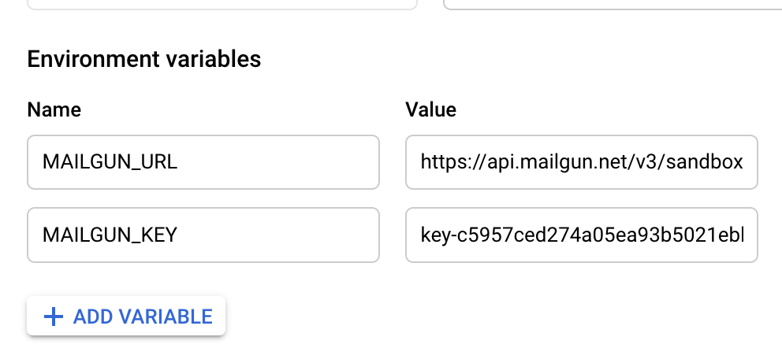

Trigger an R function from pub/sub
2022-02-28
Source:vignettes/usecase-r-event-driven-pubsub.Rmd
usecase-r-event-driven-pubsub.RmdThis uses cr_deploy_plumber to deploy an R API that can
then be triggered from pub/sub events, such as Cloud logging events or
when files get updated in a Cloud Storage bucket. This in turn can
trigger other Cloud Builds.
A plumber API that accepts pub/sub messages is facilitated by
cr_plumber_pubsub()
api.R:
# example function echos back pubsub message
# change to do something more interesting with event data
pub <- function(x){
paste("Echo:", x)
}
#' Receive pub/sub message
#' @post /pubsub
#' @param message a pub/sub message
function(message=NULL){
googleCloudRunner::cr_plumber_pubsub(message, pub)
}Deploy the R API using an image that has plumber and
googleCloudRunner installed. There is one available at
gcr.io/gcer-public/googlecloudrunner
Dockerfile:
FROM gcr.io/gcer-public/googlecloudrunner:master
COPY [".", "./"]
ENTRYPOINT ["R", "-e", "pr <- plumber::plumb(commandArgs()[4]); pr$run(host='0.0.0.0', port=as.numeric(Sys.getenv('PORT')))"]
CMD ["api.R"]Put both the Dockerfile and the api.R script in the same
folder then deploy it to Cloud Run:
cr_deploy_plumber("the_folder")Or use the RStudio gadget:

Once built you will have a pub/sub live that will trigger the
function you defined. You can test pubsub messages via
cr_pubsub()
test_url <- "http://your-cloudrun-api.com/pubsub"
cr_pubsub(test_url, "hello")
# [1] "Echo: hello"In this case the function only echos, but you can modify the function to call other libraries, functions, operate on data sent in pubsub such as bucket object names, BigQuery tableIds, etc.
# perhaps the function calls another Cloud Build
pub <- function(x){
cr_build(x, source = my_source)
}If you would like to trigger a pub/sub message when a file arrives on
Google Cloud Storage, use
googleCloudStorageR::gcs_create_pubsub()
Run R code when a pub/sub message is created from a new file in Google Cloud Storage
This is a demo to show how to make use of Pub/Sub messages. Pub/Sub messages are used throughout the Google Cloud Platform, for this example we will use one for when a new object is created in a Google Cloud Storage bucket.
A video walkthrough of the below is available here
The plumber API with pub/sub
The API endpoint in plumber needs an endpoint to recieve Pub/Sub messages, then an R function to process and do what you want with that message. In this case we shall email the file name to an end user. This could be expanded to do some R analysis, or what ever you need.
#' Send an email via mailgun
send_email <- function(message){
message("sending email with message: ", message)
httr::POST(paste0(Sys.getenv("MAILGUN_URL"),"/messages"),
httr::authenticate("api", Sys.getenv("MAILGUN_KEY")),
encode = "form",
body = list(
from="googlecloudrunner@you.me",
to="test@you.me",
subject="Message from Pub/Sub",
text=message
))
TRUE
}
#' Recieve pub/sub message
#' @post /pubsub
#' @param message a pub/sub message
function(message=NULL){
pub <- function(x){
o <- jsonlite::fromJSON(x)
message("Echo:", o)
send_email(paste("We got this file: ", o$name))
}
googleCloudRunner::cr_plumber_pubsub(message, pub)
}The above script relies on two environment arguments with the Mailgun keys, which can be set in the Cloud Run interface once a deployment is live. The environment arguments persist inbetween versions so you only need to set this up once.
For this example, the Dockerfile is a standard one with plumber and googleCloudRunner installed - you may need to add your own dependencies:
FROM gcr.io/gcer-public/googlecloudrunner:master
COPY ["./", "./"]
ENTRYPOINT ["R", "-e", "pr <- plumber::plumb(commandArgs()[4]); pr$run(host='0.0.0.0', port=as.numeric(Sys.getenv('PORT')))"]
CMD ["api.R"]Deployment
This can be deployed via the RStudio Addin, or via the code below:
cr_deploy_plumber("folder/with-api/",
image_name = "gcs-pubsub")After the first deployment, go to the web UI and
Deploy New Revision - keep everything the same but update
the environment arguments. These will persist for future revisions:

You can test the Pub/Sub API is working from R with the below code:
Setup Pub/Sub
To activate Pub/Sub messages from a Google Cloud Storage bucket, use a service account with Cloud Storage Admin rights (note not Cloud Storage Object Admin).
In the Web UI of Pub/Sub set up a Topic:

You can only setup cloud storage pub/sub messages to this topic using
the API, which can be done using
googleCloudStorageR::gce_create_pubsub():
library(googleCloudStorageR)
gcs_create_pubsub("your-topic", "your-project", "your-bucket")Each topic can have many subscriptions. One of these will push to the Cloud Run URL set up in the previous step:

Add files to Google Cloud Storage
Now when a new file arrives into the bucket, it will:
- Trigger a Pub/Sub to the Subscription
- Pass on to the Pub/Sub Topic
- Push to Cloud Run
- Execute the plumber R code to send an email
- Arrive in your inbox
You can test it by uploading files either in the web UI or via
googleCloudStorageR::gcs_upload(mtcars, bucket = "your-bucket",
name = paste(Sys.time(), "test"))You will need to setup mailgun to stop it appearing in your spam folder, by verifying your domain etc.